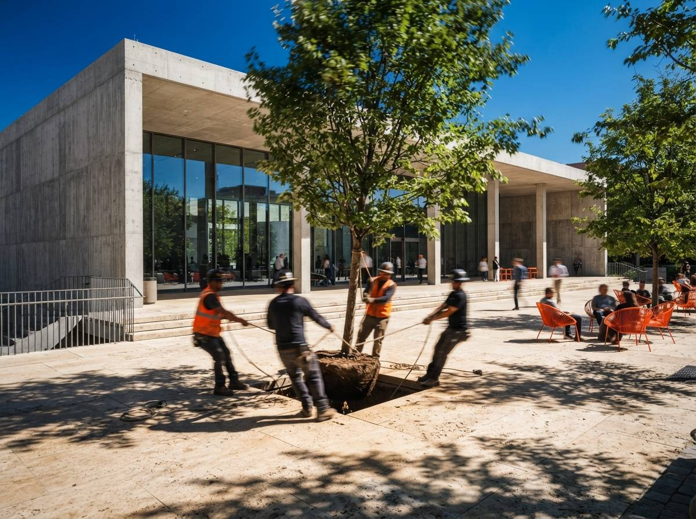
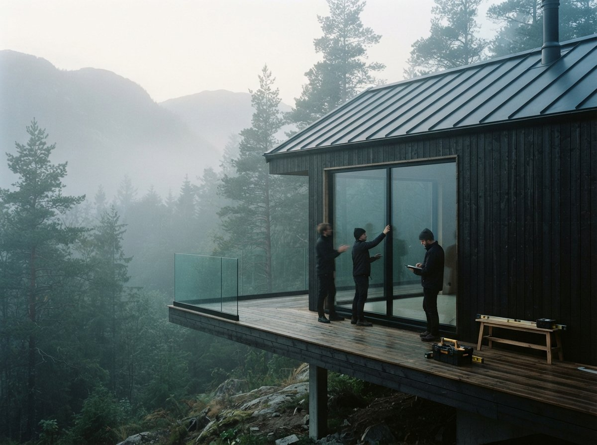

This week's round of ComfyUI workflow guides puts inpainting on the shortlist of techniques every designer should know, and the archviz threads keep circling the same request from the other direction: improve this render, but do not touch the building. We covered the global version of that request on Monday in our piece on enhancing without hallucination. Inpainting is the regional version, and architects reach for it far less than they should, mostly because the tool lists explain it as a photo-editing trick rather than what it actually is for us: a markup workflow for images.
Enhancing raises quality. Inpainting changes content.
The two passes get conflated because both start from a finished image, but they run in opposite directions. An enhance pass processes the whole frame at low denoise, somewhere around 0.2 to 0.35, so the model sharpens materials and light while the content survives. Same tree, same canopy, better pixels. Inpainting processes only the masked region, usually at high denoise, often near 1.0, so the content inside the mask is replaced outright. Different tree. Everything outside the mask is not processed gently; in a proper workflow it is not processed at all, because the tool composites the untouched original back around the regenerated patch.
That last detail is the whole value. A re-roll gives you a new image that resembles the old one. A low-denoise enhance gives you the same image, slightly drifted everywhere. An inpaint gives you the approved image with one region swapped, which is the only version of "fixed" a client who already said yes will accept.

How the mask actually works
Three settings decide whether an inpaint reads as a repair or a sticker.
The mask itself. Draw it to the lines the building gave you. If the bad region is planting in front of a facade, run the mask along the base course, not through it. If you are repairing glazing, mask to the mullion. A mask edge that crosses an architectural line invites the model to repaint that line, and a moved mullion is exactly the kind of drift that gets caught in a geometry QA pass. Feather the edge on organic boundaries, foliage, sky, grass, and keep it tight on built ones.
Denoise inside the mask. Replacing an object wants high denoise; the model needs freedom to build a new tree from scratch. Repairing an object wants less. A mangled figure at 0.5 to 0.6 keeps the pose and clothing and fixes the anatomy. A cauliflower maple at 0.95 becomes an actual maple. If you run a replacement at repair strength you get the same problem with better lighting.
Context. The model matches the new content to whatever surrounding image it is allowed to see. Crop the working area too tight and the inpainted region comes back lit for a different time of day, because the model never saw your dusk. Most graphs expose this as a context or "grow mask" area; give it enough of the scene to read the light direction and the perspective. The prompt, meanwhile, should describe only what belongs inside the mask. You are not re-prompting the render. You are captioning the patch.
The three routes, and who they fit
Photoshop Generative Fill is where most architects should start, because it lives in the tool the image was going to pass through anyway. Select, type three words, done. It is genuinely good at skies, planting, object removal and crowd repair. Its weaknesses are architectural: it tends to soften precise detail, and large fills can come back mushy at print resolution because the fill is generated smaller than the region and scaled. Use it for the organic layer of the image and stay suspicious of it near the building.
A ComfyUI inpaint graph is the controlled route. Dedicated inpainting models, Flux's fill variant or an SDXL inpaint checkpoint, respect mask boundaries far better than a general model asked to inpaint, and you can run structure control inside the mask when the edit has to hold geometry, for example swapping the material on one facade plane while the coursing and shadow lines stay put. This is the same build-versus-buy decision we mapped in the enhancer versus pipeline piece: the graph costs you an afternoon once, then every exact edit is nearly free.
Select-and-regenerate in a web editor or add-in sits between the two. Krea's editor and a growing number of render tools now offer a region brush over their own output, and where your renderer offers one it is worth trying first, since the tool already knows the image it made. Capability varies too much across products to generalize, except to say the mask and denoise logic above still governs all of them, whatever the slider is called.
What architects actually inpaint
- People. Hands, faces, and the figure whose legs merge with a bench. Repair-strength denoise, and the fixes we detailed in the entourage piece apply mask by mask.
- Planting. Wrong species, cloned trees, hedges that grew through a wall. High denoise, feathered mask, name the species in the patch prompt.
- Sky. The classic swap, and the safest, since almost nothing built touches it. Watch the horizon line and the light direction.
- One material plane. Possible, and the hardest on the list. More below.
- Removals. The neighbor's crane, the seventh identical car, the flag the model invented. Removal is just inpainting with a patch prompt describing what is behind the object.
- Fixing an earlier AI pass. Increasingly the most common use: the enhance pass hallucinated a balcony rail, so you mask the rail and put it back. AI to fix AI, which is either elegant or damning depending on the deadline.

Where it goes wrong
Lighting mismatch is the failure everyone hits first: a noon tree pasted into a dusk render. The patch is sharp, the perspective is fine, and it still reads as a collage. The cause is almost always starved context or a patch prompt that fought the scene. Widen the context, and put the light in the prompt: "maple at dusk, warm low light from the left."
Edge bleed is the quiet one. The model repaints a strip just outside the mask to blend the patch, and if that strip contains a parapet line, the parapet moves. This is why masks stop at architectural lines, and why the after image deserves a flick-comparison against the before at every edge the mask touches.
The corner problem kills most material swaps. You mask the south facade and swap the brick for board-formed concrete, and the patch is perfect, and the west return still shows brick where it turns the corner. The model has no idea those two planes are one material. Mask both planes in one pass, accept a crop that hides the return, or concede that a material change this real belongs back in the model, not in the pixels.
Scale drift shows up in inserted objects: people at the wrong eye height, a car subtly too small for the bay it parks in. The model infers scale from context, so give it context with scale cues in it, and check inserted figures against a door head before anyone else does.
One more, structural rather than visual: some tools re-encode the entire image even for a masked edit, which means every inpaint slightly degrades the ninety percent you meant to protect. Run one edit, difference the before and after, and if pixels outside the mask changed, find the composite setting or find another tool.
The pass order that holds
- Enhance first, globally, at low denoise, so quality problems do not get mistaken for content problems. Half the "bad tree" complaints dissolve here.
- Inpaint content, big to small. Sky, then planting, then people, then removals. Big patches change light and context for small ones, so do them first.
- Relight before fine detail, if the time of day is changing at all, because a relighting pass after your inpaints will drift every patch you carefully matched.
- Upscale last. The tiled upscale hardens everything, edits included. Inpainting after upscale means fighting print-resolution pixels for anything bigger than a hand.
A re-roll is a slot machine. An inpaint is a red pen. One of these belongs in a design office.
Our take: the render is a drawing now
The reason inpainting matters more for architects than for almost anyone else using these tools is that our images accumulate approvals. A concept artist can re-roll forever; nobody signed the previous frame. We work in versions, and a version a client approved is a document. The whole-image regenerate, the default button in every tool, is the one move that destroys the document to fix the defect.
Inpainting restores the discipline we already had. It is redlining, applied to pixels: circle the thing that is wrong, fix the thing that is wrong, leave the rest of the sheet alone. The studios getting the most out of AI imagery this year are not the ones with the best prompts. They are the ones who stopped treating the render as a lottery ticket and started treating it as a markup set.
The client asked for a better tree. Give them the same building.
Drawn from this week's intel sweep, where inpainting appeared on paacademy's list of essential ComfyUI workflows and the r/FluxAI and r/archviz threads kept asking for regional fixes that preserve the design, plus Vista Studios production use of masked edits on client-facing renders. Tool behaviour and model versions change; the mask logic is the durable part. No affiliate relationship with any tool named.